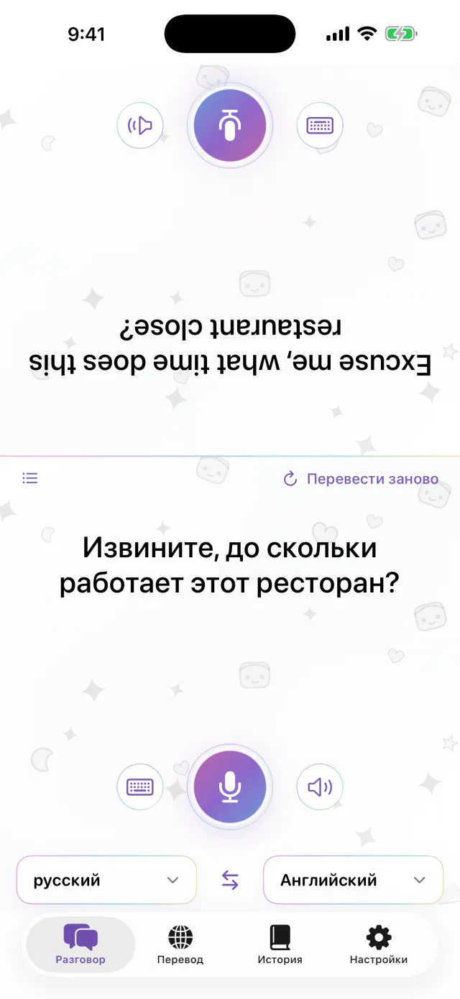
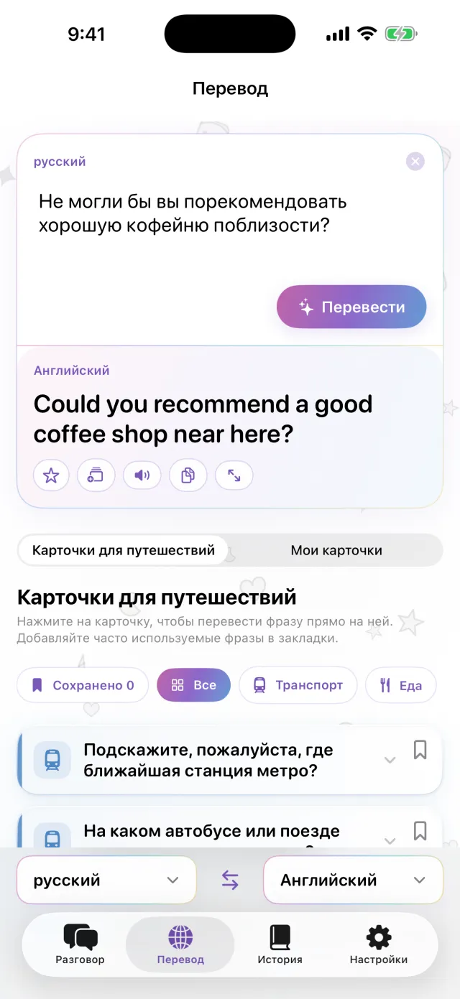
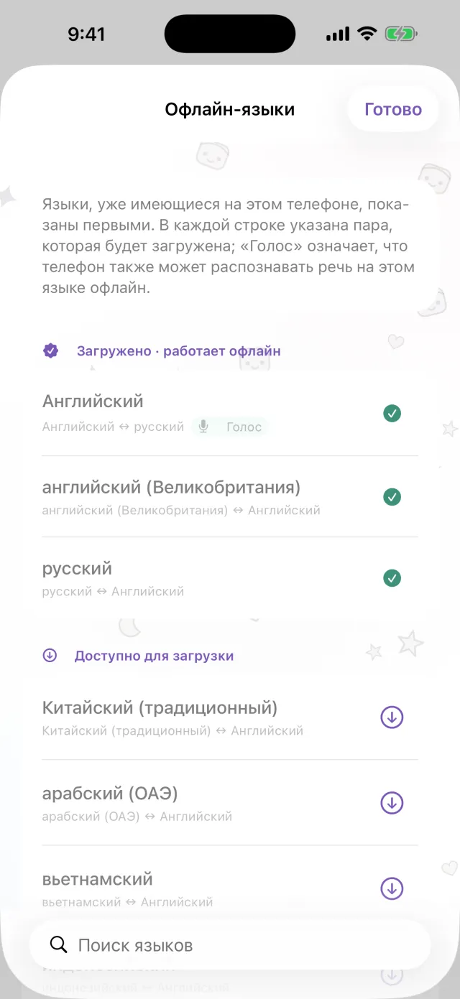
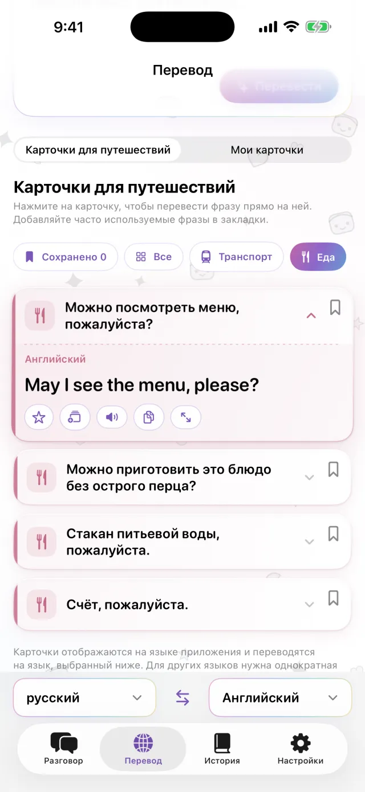
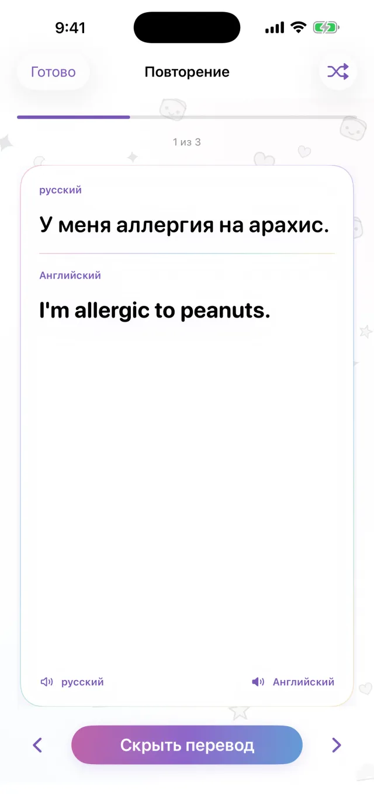

Переводчик для iPhone
Переводчик для iPhone
Положите iPhone
между вами.
Вот и всё.
Нажмите на микрофон и говорите. Перевод появится на другой половине экрана, лицом к собеседнику. Когда он отвечает, всё работает так же. Скачайте языки заранее, и приложение будет работать без подключения.
Скоро в App Store- Около 20 языков
- Офлайн после загрузки
- Без регистрации

Ввод текста
Не можете говорить вслух? Напечатайте.
В тихом месте или когда собеседник говорит слишком быстро, просто введите текст. Перевод можно развернуть на весь экран и показать собеседнику.
- Можно скопировать или прослушать
- Языки меняются местами одним нажатием

Офлайн
Переводит и без интернета
Перевод, распознавание речи и озвучивание работают прямо на iPhone. Скачайте нужные языки до поездки, и приложение будет работать в самолёте или до покупки SIM-карты. Сказанное не отправляется на сервер, записи не сохраняются.

Карточки с фразами
Сохраните то, что приходится повторять
Адрес отеля, пищевая аллергия, нужная станция. Сохраните их как карточки, и вводить заново не придётся. Нажмите на карточку, и она переведётся на язык собеседника. В приложении уже есть готовые карточки для транспорта, кафе и ресторанов, проживания и покупок.

Pro
Повторяйте сохранённые фразы вовремя
Нажмите на звёздочку у фразы, чтобы добавить её в повторение. Если вы запомнили фразу, она вернётся через 1, 3, 7, 14 и 30 дней. Если нет, вы увидите её снова в тот же день. Можно вспоминать перевод по оригиналу или наоборот. Эта функция входит в Pro.

Пригодится, когда нужно
- Сделать заказ в небольшом кафе
- Назвать таксисту адрес
- Рассказать об аллергии в аптеке
- Оставить вещи на стойке регистрации в отеле
- Спросить дорогу
Посмотрите за 30 секунд
В этом видео включён авиарежим.
Коротко о приложении
| Языки | Около 20 (языки, которые Apple переводит на устройстве) |
|---|---|
| Офлайн | Да, после загрузки языков |
| Голосовой ввод | Да. Для некоторых языков доступен только ввод текста |
| Учётная запись | Не нужна |
| Цена | Бесплатно. Pro оплачивается отдельно (см. ниже) |
| Требования | iPhone с iOS 18 или новее |
- В первый раз нужно подключение к интернету, чтобы скачать языки.
- Цены отображаются в App Store в местной валюте.
Бесплатная версия и Pro
Бесплатно
- Разговор лицом к лицу
- Ввод текста и показ на весь экран
- Офлайн-перевод
- Карточки для путешествий и 3 собственные карточки
- Небольшой рекламный баннер
Pro
- Без рекламы
- Любое количество карточек
- История переводов и повторение по расписанию
Подписка на неделю или месяц либо разовая покупка.
Перед поездкой скачайте языки.
Скоро в App StoreiPhone · iOS 18 или новее · Бесплатно · Как работает каждый экран